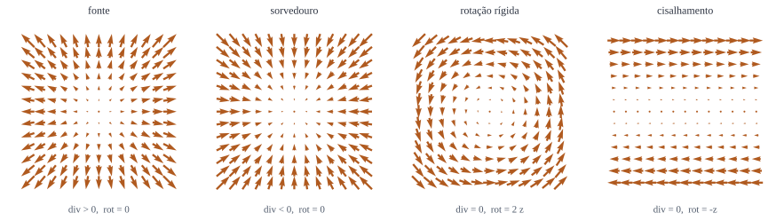

Gradiente
Multiplicação por escalar: \(\nabla T\). Entra escalar, sai vetor.
EM I · 4 encontros de duas horas
A linguagem do curso inteiro: gradiente, divergente, rotacional, os teoremas integrais e a função delta. Sem isso, as equações de Maxwell são só símbolos.
Este capítulo não tem física nenhuma, e é o mais importante do curso. As quatro equações de Maxwell cabem em duas linhas, mas essas duas linhas são escritas numa linguagem que usa divergente, rotacional e dois teoremas integrais. Quem não domina a linguagem lê as equações como quem lê uma partitura sem saber música: reconhece os símbolos e não ouve nada.
Começamos pelo que já é conhecido, para fixar notação. Um vetor tem módulo e direção, e nós o escrevemos com a seta por cima, \(\vet{A}\), reservando o circunflexo para os unitários, \(\vers{x}\), \(\vers{y}\), \(\vers{z}\). Em componentes cartesianas,
\[ \vet{A} = A_x\vers{x} + A_y\vers{y} + A_z\vers{z}. \]O produto escalar devolve um número e mede quanto dois vetores apontam para o mesmo lado:
\[ \vet{A}\cdot\vet{B} = AB\cos\theta = A_xB_x + A_yB_y + A_zB_z. \]O produto vetorial devolve um vetor, perpendicular aos dois, e mede quanto eles não apontam para o mesmo lado:
\[ \vet{A}\cruz\vet{B} = AB\sen\theta\;\vers{n} = \begin{vmatrix} \vers{x} & \vers{y} & \vers{z}\\ A_x & A_y & A_z\\ B_x & B_y & B_z \end{vmatrix}. \]O sentido de \(\vers{n}\) é o da regra da mão direita, e é a única parte convencional de tudo isto. Vale notar desde já: o produto vetorial é anticomutativo, \(\vet{A}\cruz\vet{B} = -\vet{B}\cruz\vet{A}\), e o produto de um vetor por ele mesmo é nulo. Essas duas propriedades vão matar mais termos ao longo do curso do que qualquer outra coisa.
A força elétrica, \(q\vet{E}\), é um produto por escalar: ela aponta ao longo do campo. A força magnética, \(q\vet{v}\cruz\vet{B}\), é um produto vetorial: ela aponta perpendicularmente ao campo e à velocidade. Toda a estranheza do capítulo 5, incluindo o fato de a força magnética não realizar trabalho, está contida na antissimetria do produto vetorial, e não em nenhuma propriedade misteriosa do magnetismo.
Com três vetores há duas combinações que aparecem o tempo todo. O produto misto é o volume do paralelepípedo formado pelos três,
\[ \vet{A}\cdot\left(\vet{B}\cruz\vet{C}\right) = \vet{B}\cdot\left(\vet{C}\cruz\vet{A}\right) = \vet{C}\cdot\left(\vet{A}\cruz\vet{B}\right), \]invariante por permutação cíclica, e o produto vetorial duplo, que se resolve pela regra conhecida como "bac menos cab":
\[ \vet{A}\cruz\left(\vet{B}\cruz\vet{C}\right) = \vet{B}\left(\vet{A}\cdot\vet{C}\right) - \vet{C}\left(\vet{A}\cdot\vet{B}\right). \]Vale a pena decorar esta segunda: ela é o atalho que transforma a dedução da densidade de energia do campo, no capítulo 8, de uma página em três linhas.
Em física, quase nada é constante: temperatura varia de ponto a ponto, a pressão varia, o campo varia. A pergunta natural é como uma grandeza muda quando se anda um pouco, e a resposta depende da direção em que se anda. É isso que o gradiente organiza.
Para uma função escalar \(T(x,y,z)\), a variação ao dar um passo \(d\vet{\ell} = dx\,\vers{x} + dy\,\vers{y} + dz\,\vers{z}\) é
\[ dT = \pder{T}{x}dx + \pder{T}{y}dy + \pder{T}{z}dz = \left(\nabla T\right)\cdot d\vet{\ell}, \]onde
\[ \boxed{\;\nabla T = \pder{T}{x}\vers{x} + \pder{T}{y}\vers{y} + \pder{T}{z}\vers{z}.\;} \]Escrito assim, \(dT = |\nabla T|\,|d\vet{\ell}|\cos\theta\), e as três leituras do gradiente caem de bandeja: ele aponta na direção de maior crescimento, o seu módulo é a taxa de crescimento naquela direção, e andar perpendicularmente a ele não muda nada, de onde se conclui que o gradiente é sempre normal às superfícies de nível.
No topo de um morro, ou no fundo de um vale, não há direção de crescimento que se destaque, e \(\nabla T = 0\). São os pontos estacionários, e o fato de eles incluírem máximos, mínimos e selas é o mesmo fato do cálculo de uma variável, agora em três.
Convém tratar
\[ \nabla = \vers{x}\pder{}{x} + \vers{y}\pder{}{y} + \vers{z}\pder{}{z} \]como um vetor cujas componentes são operadores. Ele não é um vetor de verdade, porque sozinho não significa nada; mas opera como um, e isso permite três combinações, exatamente como com um vetor comum:
Multiplicação por escalar: \(\nabla T\). Entra escalar, sai vetor.
Produto escalar: \(\divg{\vet{v}}\). Entra vetor, sai escalar.
Produto vetorial: \(\rot{\vet{v}}\). Entra vetor, sai vetor.
O nome é literal: o divergente mede o quanto o campo diverge a partir do ponto. Pense num fluido. Se, ao redor de um ponto, sai mais fluido do que entra, há uma fonte ali, e o divergente é positivo; se entra mais do que sai, há um sorvedouro, e ele é negativo; se a vazão se equilibra, ele é nulo, e o campo é dito solenoidal.
Repare na palavra ponto: divergente é uma grandeza local. Um campo pode ter divergente nulo em toda parte e mesmo assim ter fluxo saindo de uma região, desde que as fontes estejam fora dela.
O rotacional mede a circulação do campo em torno do ponto. A imagem tradicional é a de uma rodinha de pás mergulhada no fluido: se ela gira, há rotacional, e o vetor \(\rot{\vet{v}}\) aponta ao longo do eixo da rodinha, pela regra da mão direita.
A imagem engana numa coisa, e vale o aviso: um campo pode girar visualmente e ter rotacional nulo, e pode ser todo paralelo e ter rotacional enorme. O campo \(\vet{v} = \vers{\phi}/s\) em torno de um eixo tem rotacional nulo em todo ponto fora do eixo, apesar de as linhas serem circunferências; e o campo \(\vet{v} = y\,\vers{x}\), cujas linhas são retas paralelas, tem rotacional \(-\vers{z}\) em toda parte. O que conta é o cisalhamento, não o desenho.

O quadrado tracejado é onde as diferenças finitas são tomadas, e as quatro setas vermelhas são o campo nos quatro vizinhos: o divergente compara as duas horizontais, o rotacional compara o giro. Repare no campo do fio: longe do eixo, as quatro setas se arranjam de modo que o rotacional dá zero, apesar de as linhas serem circunferências.
O operador \(\nabla\) obedece a regras de produto, só que há mais combinações do que no cálculo de uma variável. As duas mais usadas no curso são
\[ \nabla(fg) = f\nabla g + g\nabla f, \qquad \divg{\left(f\vet{A}\right)} = f\left(\divg{\vet{A}}\right) + \vet{A}\cdot\left(\nabla f\right), \]e, por vir a calhar na dedução da energia magnética,
\[ \divg{\left(\vet{A}\cruz\vet{B}\right)} = \vet{B}\cdot\left(\rot{\vet{A}}\right) - \vet{A}\cdot\left(\rot{\vet{B}}\right). \]Agora o aviso mais importante da seção: não existe divisão por vetor, e não existe regra do quociente para \(\nabla\) agindo sobre um vetor dividido por outro, porque essa expressão não quer dizer nada. Metade dos erros de álgebra vetorial em prova nasce de tratar \(\nabla\) como se fosse um número que comuta com tudo. Ele não comuta: \(\nabla f\) e \(f\nabla\) são objetos diferentes.
Com dois \(\nabla\) há cinco combinações possíveis, e só duas importam:
\[ \divg{\left(\nabla T\right)} = \nabla^2 T = \frac{\partial^2 T}{\partial x^2} + \frac{\partial^2 T}{\partial y^2} + \frac{\partial^2 T}{\partial z^2}, \]o laplaciano, que vai dominar os capítulos 2 e 3, e
\[ \rot{\left(\rot{\vet{v}}\right)} = \nabla\left(\divg{\vet{v}}\right) - \nabla^2\vet{v}, \]que é o que transforma as equações de Maxwell em equação de onda, no capítulo 9. As outras duas combinações são identicamente nulas, e isso é usado o tempo todo:
\[ \boxed{\;\rot{\left(\nabla T\right)} = 0,\qquad \divg{\left(\rot{\vet{v}}\right)} = 0.\;} \]A primeira é a razão de o campo eletrostático poder ser escrito como gradiente de um potencial; a segunda é a razão de o campo magnético poder ser escrito como rotacional de um potencial vetor. Elas não são curiosidades matemáticas: são o alicerce de metade do curso.
Derivar é local; integrar é global. As três integrais que o curso usa são a de linha, a de superfície e a de volume, e cada uma tem um teorema que a liga de volta às derivadas.
Soma a componente do campo ao longo do caminho. É trabalho, é fem, é diferença de potencial.
Soma o que atravessa a superfície. É fluxo elétrico, fluxo magnético, corrente.
Soma a grandeza por toda a região. É carga total, é energia total.
Todos têm a mesma estrutura, e vale a pena enxergá-la: a integral de uma derivada numa região é igual ao valor da função na fronteira da região. O teorema fundamental do cálculo diz isso em uma dimensão; aqui ele aparece três vezes.
\[ \int_a^b \left(\nabla T\right)\cdot d\vet{\ell} = T(b) - T(a) \qquad\text{(gradiente)} \] \[ \int_V \left(\divg{\vet{v}}\right)d\tau = \oint_S \vet{v}\cdot d\vet{a} \qquad\text{(divergência, ou de Gauss)} \] \[ \int_S \left(\rot{\vet{v}}\right)\cdot d\vet{a} = \oint_C \vet{v}\cdot d\vet{\ell} \qquad\text{(Stokes)} \]Repare na escada: no primeiro, a fronteira de um caminho são dois pontos; no segundo, a fronteira de um volume é uma superfície fechada; no terceiro, a fronteira de uma superfície é uma curva fechada.
Três consequências imediatas, que serão usadas sem aviso no resto do curso:
Exemplo trabalhado: conferindo o teorema da divergência. Tome \(\vet{v} = \left(xy\right)\vers{x} + \left(2yz\right)\vers{y} + \left(3zx\right)\vers{z}\) e o cubo de lado \(a = 2\) com um vértice na origem, ocupando o primeiro octante. Vamos calcular os dois lados.
Lado do volume. O divergente é
\[ \divg{\vet{v}} = y + 2z + 3x, \]e integrando no cubo, por simetria das três variáveis,
\[ \int_V (y + 2z + 3x)\,d\tau = (1 + 2 + 3)\int_V x\,d\tau = 6\cdot\frac{a}{2}\cdot a^3 = 6\cdot1\cdot8 = 48. \]Lado da superfície. São seis faces. Nas três que tocam os planos coordenados, o campo tem componente normal nula ou o integrando se anula: em \(x=0\) a componente \(v_x = xy\) é zero; em \(y=0\), \(v_y = 2yz\) é zero; em \(z=0\), \(v_z = 3zx\) é zero. Sobram as três faces externas:
\[ \int_{x=a} xy\,dy\,dz = a\int_0^a y\,dy\int_0^a dz = 2\cdot2\cdot2 = 8, \] \[ \int_{y=a} 2yz\,dx\,dz = 2a\int_0^a z\,dz\int_0^a dx = 4\cdot2\cdot2 = 16, \] \[ \int_{z=a} 3zx\,dx\,dy = 3a\int_0^a x\,dx\int_0^a dy = 6\cdot2\cdot2 = 24. \]Somando, \(8 + 16 + 24 = 48\). Os dois lados batem.
O trabalho de verificar isso uma vez na vida compensa: daí em diante, usar o
teorema para trocar uma integral de volume por uma de superfície deixa de ser um
ato de fé. O programa
teoremas_integrais.py refaz essa conta numericamente, e também
verifica Stokes numa superfície curva, onde fazer à mão seria desagradável.
Da regra do produto \(\divg{(f\vet{A})} = f\divg{\vet{A}} + \vet{A}\cdot\nabla f\), integrando num volume e aplicando o teorema da divergência,
\[ \int_V f\left(\divg{\vet{A}}\right)d\tau = -\int_V \vet{A}\cdot\left(\nabla f\right)d\tau + \oint_S f\vet{A}\cdot d\vet{a}. \]É a integração por partes de sempre, com o termo de fronteira virando uma integral de superfície. Quando o volume é todo o espaço e os campos caem rápido o bastante, o termo de superfície morre, e sobra a troca de derivada de um fator para o outro. Esse movimento aparece na dedução da energia do campo elétrico, da energia magnética e do potencial vetor, três vezes pelo mesmo motivo.
Coordenadas cartesianas são as mais simples, e quase nunca as melhores. Um problema com simetria esférica resolvido em \(x,y,z\) vira um pesadelo algébrico; o mesmo problema em \(r,\theta,\phi\) costuma caber em três linhas. O preço é que os vetores unitários deixam de ser constantes.
Em cartesianas, \(\vers{x}\) é o mesmo vetor em todo ponto do espaço. Em esféricas, não: \(\vers{r}\) aponta para fora, e portanto muda de direção de um ponto para outro. Logo, ele não pode ser tirado para fora de uma integral nem de uma derivada. Integrar \(\vers{r}\) sobre uma esfera inteira dá zero, e não \(4\pi\vers{r}\).
Com \(r\) a distância à origem, \(\theta\) o ângulo polar medido do eixo \(z\) e \(\phi\) o azimutal medido do eixo \(x\),
\[ x = r\sen\theta\cos\phi,\qquad y = r\sen\theta\sen\phi,\qquad z = r\cos\theta. \]O deslocamento infinitesimal tem um fator métrico em cada direção:
\[ d\vet{\ell} = dr\,\vers{r} + r\,d\theta\,\vers{\theta} + r\sen\theta\,d\phi\,\vers{\phi}, \]de onde sai o elemento de volume
\[ \boxed{\;d\tau = r^2\sen\theta\,dr\,d\theta\,d\phi\;} \]e o elemento de área sobre uma esfera de raio \(R\), \(d\vet{a} = R^2\sen\theta\,d\theta\,d\phi\,\vers{r}\). O fator \(r^2\sen\theta\) é o jacobiano, e esquecê-lo é o segundo erro clássico do capítulo.
Os operadores ganham esses fatores:
\[ \nabla T = \pder{T}{r}\vers{r} + \frac{1}{r}\pder{T}{\theta}\vers{\theta} + \frac{1}{r\sen\theta}\pder{T}{\phi}\vers{\phi}, \] \[ \divg{\vet{v}} = \frac{1}{r^2}\pder{\left(r^2v_r\right)}{r} + \frac{1}{r\sen\theta}\pder{\left(\sen\theta\,v_\theta\right)}{\theta} + \frac{1}{r\sen\theta}\pder{v_\phi}{\phi}. \]Com \(s\) a distância ao eixo \(z\), \(\phi\) o azimutal e \(z\) o mesmo de sempre,
\[ d\vet{\ell} = ds\,\vers{s} + s\,d\phi\,\vers{\phi} + dz\,\vers{z}, \qquad d\tau = s\,ds\,d\phi\,dz, \] \[ \divg{\vet{v}} = \frac{1}{s}\pder{\left(sv_s\right)}{s} + \frac{1}{s}\pder{v_\phi}{\phi} + \pder{v_z}{z}. \]Elas são as coordenadas naturais do fio infinito, do solenoide e do cabo coaxial, isto é, de metade dos exemplos do capítulo 5.
Exemplo trabalhado: o volume da esfera, e por que o jacobiano importa. Integrando \(d\tau\) sobre a esfera de raio \(R\),
\[ V = \int_0^{R}\!\!\int_0^{\pi}\!\!\int_0^{2\pi} r^2\sen\theta\,d\phi\,d\theta\,dr = \left(\frac{R^3}{3}\right)(2)(2\pi) = \frac{4}{3}\pi R^3, \]onde \(\int_0^\pi \sen\theta\,d\theta = 2\) e \(\int_0^{2\pi}d\phi = 2\pi\). Sem o fator \(r^2\sen\theta\) o resultado seria \(2\pi^2 R\), que não é nem dimensionalmente volume.
Vale praticar a mesma integral com um integrando que dependa do ângulo. Para uma esfera de densidade \(\rho(r,\theta) = \rho_0\cos^2\theta\), a massa é
\[ m = \rho_0\int_0^{R}r^2dr\int_0^{\pi}\cos^2\theta\sen\theta\,d\theta \int_0^{2\pi}d\phi = \rho_0\frac{R^3}{3}\cdot\frac{2}{3}\cdot2\pi = \frac{4\pi\rho_0R^3}{9}, \]usando \(\int_0^\pi \cos^2\theta\sen\theta\,d\theta = 2/3\), que sai na hora com \(u = \cos\theta\). Essa substituição vai reaparecer em todo problema com simetria azimutal, inclusive nos de Legendre do capítulo 5.
Há um campo que aparece em toda a eletrostática e que, tratado sem cuidado, produz uma contradição. É o campo radial que cai com o quadrado da distância:
\[ \vet{v} = \frac{\vers{r}}{r^2}. \]Calcule o divergente dele em esféricas. Como \(v_r = 1/r^2\),
\[ \divg{\vet{v}} = \frac{1}{r^2}\pder{}{r}\left(r^2\cdot\frac{1}{r^2}\right) = \frac{1}{r^2}\pder{(1)}{r} = 0. \]Divergente nulo em toda parte. Agora calcule o fluxo dele por uma esfera de raio \(R\) centrada na origem:
\[ \oint \vet{v}\cdot d\vet{a} = \int \frac{1}{R^2}\left(R^2\sen\theta\,d\theta\,d\phi\right) = 4\pi. \]Quatro pi, para qualquer raio. Mas o teorema da divergência diz que esse fluxo é a integral do divergente no volume, que acabamos de calcular como zero. Algo está errado.
O erro está em \(r = 0\), onde o campo explode e a conta do divergente não vale. Toda a divergência está concentrada num único ponto, de um jeito que nenhuma função consegue descrever: ela teria de ser nula em toda parte e, mesmo assim, ter integral igual a \(4\pi\).
Em uma dimensão, define-se \(\delta(x)\) pela propriedade
\[ \delta(x) = 0 \text{ para } x \ne 0,\qquad \int_{-\infty}^{\infty}\delta(x)\,dx = 1, \]e a consequência que a torna útil,
\[ \boxed{\;\int_{-\infty}^{\infty} f(x)\,\delta(x-a)\,dx = f(a).\;} \]Ela não é uma função no sentido usual, e sim uma distribuição: só faz sentido dentro de uma integral. A maneira honesta de pensar nela é como limite de uma sequência de funções cada vez mais altas e estreitas, com área sempre igual a um, por exemplo gaussianas de largura decrescente. O limite não existe pontualmente, mas existe sob a integral, e é só isso que se usa.
Em três dimensões, \(\delta^3(\vet{r}) = \delta(x)\delta(y)\delta(z)\), e a contradição se resolve:
\[ \boxed{\;\divg{\left(\frac{\vers{r}}{r^2}\right)} = 4\pi\,\delta^3(\vet{r}).\;} \]Com isso, os dois cálculos passam a concordar: o divergente é nulo em toda parte menos na origem, e a sua integral em qualquer volume que contenha a origem vale \(4\pi\).
O campo de uma carga pontual é exatamente \(\vet{E} = \frac{q}{4\pi \varepsilon_0}\frac{\vers{r}}{r^2}\). A identidade acima, aplicada a ele, dá
\[ \divg{\vet{E}} = \frac{q}{\varepsilon_0}\delta^3(\vet{r}) = \frac{\rho}{\varepsilon_0}, \]
que é a lei de Gauss na forma diferencial, com \(\rho = q\delta^3(\vet{r})\) sendo a maneira correta de escrever "densidade de carga de uma carga pontual". Sem a delta, a lei de Gauss diferencial simplesmente não valeria para cargas pontuais, e metade da eletrostática ficaria sem fundamento.
O programa delta_dirac.py mostra
a sequência de gaussianas se estreitando, verifica numericamente a
propriedade de filtragem e calcula o fluxo de \(\vers{r}/r^2\) por esferas de
vários raios, obtendo \(4\pi\) em todos.
Fecha o capítulo uma pergunta de arrumação: o que é preciso saber para determinar um campo vetorial por completo?
A resposta é o teorema de Helmholtz, e ela é curta: um campo vetorial que tenda a zero suficientemente rápido no infinito fica completamente determinado pelo seu divergente e pelo seu rotacional. Nada mais é necessário, e nada menos basta.
É por isso que as equações de Maxwell são quatro, e não duas ou dez: elas dizem o divergente e o rotacional de \(\vet{E}\), e o divergente e o rotacional de \(\vet{B}\). Com isso os dois campos estão determinados, dadas as fontes. Olhe de novo a lista, agora com esta chave:
\[ \divg{\vet{E}} = \frac{\rho}{\varepsilon_0},\qquad \rot{\vet{E}} = -\pder{\vet{B}}{t},\qquad \divg{\vet{B}} = 0,\qquad \rot{\vet{B}} = \mu_0\vet{J} + \mu_0\varepsilon_0\pder{\vet{E}}{t}. \]Duas equações por campo, divergente e rotacional de cada. O capítulo inteiro estava construindo a pergunta cuja resposta é essa tabela.
As duas identidades nulas da seção 2 se traduzem assim:
Se \(\rot{\vet{v}} = 0\) em toda parte, então \(\vet{v} = -\nabla V\) para algum escalar \(V\).
É o caso de \(\vet{E}\) na eletrostática, e o potencial elétrico nasce daí.
Se \(\divg{\vet{v}} = 0\) em toda parte, então \(\vet{v} = \rot{\vet{A}}\) para algum vetor \(\vet{A}\).
É o caso de \(\vet{B}\) sempre, e o potencial vetor nasce daí.
Note a assimetria entre as duas: o potencial escalar é determinado a menos de uma constante, enquanto o potencial vetor é determinado a menos do gradiente de qualquer função, porque \(\rot{(\nabla\lambda)} = 0\). Essa liberdade a mais tem nome, calibre, e ela será usada como ferramenta no capítulo 10.
O caso geral, em que nem o divergente nem o rotacional são nulos, se resolve somando as duas coisas:
\[ \vet{v} = -\nabla V + \rot{\vet{A}}, \]que é a decomposição de Helmholtz. Todo campo é uma parte que diverge e não gira mais uma parte que gira e não diverge.
Três programas que fazem numericamente o que o capítulo fez no papel. Eles são curtos de propósito: a ideia é que o aluno consiga ler cada um inteiro de uma sentada e depois mexer.
Calcula gradiente, divergente, rotacional e laplaciano por diferenças finitas numa grade tridimensional, e testa as duas identidades nulas.
Confira assim: o rotacional de um gradiente e o divergente de um rotacional têm de dar zero até o erro de truncamento, e esse erro tem de cair como \(h^2\) ao refinar a grade. O programa imprime a tabela de convergência.
Verifica o teorema da divergência no cubo do exemplo resolvido e o teorema de Stokes numa calota esférica, comparando a circulação na borda com o fluxo do rotacional.
Confira assim: os dois lados de cada teorema têm de coincidir; no caso de Stokes, o programa ainda troca a superfície por outra com a mesma borda, e o resultado não pode mudar.
Mostra a delta como limite de gaussianas estreitas, testa a propriedade de filtragem e calcula o fluxo de \(\vers{r}/r^2\) por esferas de raios diferentes.
Confira assim: a integral de \(f(x)\delta_\epsilon(x-a)\) tem de tender a \(f(a)\) quando \(\epsilon\to0\), e o fluxo tem de dar \(4\pi\) para todo raio, apesar de o divergente ser nulo fora da origem.
Os enunciados são nossos, e as soluções estão aqui mesmo, recolhidas. Resolva antes de abrir: ler solução pronta dá a sensação de ter entendido, que é diferente de ter entendido.
Um cubo tem um vértice na origem e lados de comprimento \(a\) ao longo dos eixos. Calcule o ângulo entre duas diagonais do cubo que partem de vértices diferentes da mesma face, usando o produto escalar. Mostre que o resultado não depende de \(a\).
Tome a diagonal que vai de \((0,0,0)\) a \((a,a,a)\) e a que vai de \((a,0,0)\) a \((0,a,a)\). Os vetores são
\[ \vet{A} = a(1,1,1),\qquad \vet{B} = a(-1,1,1). \]
O produto escalar vale \(\vet{A}\cdot\vet{B} = a^2(-1+1+1) = a^2\), e os módulos são ambos \(a\sqrt{3}\). Logo
\[ \cos\theta = \frac{a^2}{3a^2} = \frac{1}{3} \;\Longrightarrow\; \theta = 70{,}53^\circ. \]
O \(a^2\) cancela, e tinha de cancelar: ângulo é propriedade de forma, e cubos de qualquer tamanho são semelhantes. O suplemento, \(109{,}47^\circ\), é o ângulo de ligação do carbono tetraédrico, e é exatamente a mesma geometria.
Considere \(\vet{v} = \dfrac{\vers{\phi}}{s}\) em coordenadas cilíndricas, isto é, um campo cujas linhas são circunferências em torno do eixo \(z\). Calcule o rotacional para \(s \ne 0\) e a circulação ao longo de um círculo de raio \(s\) centrado no eixo. Explique a aparente contradição com o teorema de Stokes.
Em cilíndricas, para um campo puramente azimutal com \(v_\phi = v_\phi(s)\),
\[ \rot{\vet{v}} = \frac{1}{s}\der{\left(s v_\phi\right)}{s}\vers{z} = \frac{1}{s}\der{(1)}{s}\vers{z} = 0 \qquad (s \ne 0). \]
A circulação, porém, não é nula:
\[ \oint \vet{v}\cdot d\vet{\ell} = \int_0^{2\pi}\frac{1}{s}\,(s\,d\phi) = 2\pi. \]
A contradição é só aparente. O teorema de Stokes exige que o rotacional seja bem definido em toda a superfície apoiada na curva, e qualquer superfície que se apoie nesse círculo atravessa o eixo \(s = 0\), onde o campo explode. A circulação de \(2\pi\) está toda concentrada ali, exatamente como a divergência de \(\vers{r}/r^2\) está concentrada na origem.
Este é o campo magnético de um fio, a menos de constantes, e a "singularidade" é a corrente. Troque o fio por um condutor de raio finito e tudo volta a ser suave: dentro dele o rotacional é \(\mu_0\vet{J}\), e a conta fecha sem nenhum mistério.
Mostre que, para qualquer função \(f(r)\) que dependa apenas da distância à origem, vale \(\nabla f = \der{f}{r}\,\vers{r}\). Use o resultado para calcular \(\nabla(1/r)\) e \(\nabla(r^n)\), e diga o que o primeiro tem a ver com a eletrostática.
Em esféricas, o gradiente é
\[ \nabla f = \pder{f}{r}\vers{r} + \frac{1}{r}\pder{f}{\theta} \vers{\theta} + \frac{1}{r\sen\theta}\pder{f}{\phi}\vers{\phi}, \]
e se \(f\) só depende de \(r\) as duas últimas derivadas se anulam, sobrando \(\nabla f = f'(r)\vers{r}\).
Aplicando,
\[ \nabla\!\left(\frac{1}{r}\right) = -\frac{1}{r^2}\vers{r}, \qquad \nabla(r^n) = n r^{n-1}\vers{r}. \]
A ligação com a eletrostática. O campo de uma carga pontual é \(\vet{E} = \frac{q}{4\pi\varepsilon_0}\frac{\vers{r}}{r^2}\), e o primeiro resultado diz que ele é exatamente \(-\nabla V\) com \(V = \frac{q}{4\pi\varepsilon_0 r}\). Ou seja: o potencial de Coulomb não é adivinhado, ele é a primitiva radial do campo. O sinal negativo da definição \(\vet{E} = -\nabla V\) é escolhido justamente para que \(V\) decresça no sentido do campo.
Tome \(\vet{v} = \left(2xz + 3y^2\right)\vers{y} + \left(4yz^2\right) \vers{z}\) e a superfície do quadrado unitário no plano \(x = 0\), com \(0 \le y \le 1\) e \(0 \le z \le 1\). Verifique o teorema de Stokes calculando os dois lados.
Lado do rotacional. Com \(v_x = 0\), \(v_y = 2xz+3y^2\) e \(v_z = 4yz^2\),
\[ \left(\rot{\vet{v}}\right)_x = \pder{v_z}{y} - \pder{v_y}{z} = 4z^2 - 2x, \]
e sobre o plano \(x=0\) isso vale \(4z^2\). Com \(d\vet{a} = dy\,dz\,\vers{x}\),
\[ \int_S \left(\rot{\vet{v}}\right)\cdot d\vet{a} = \int_0^1\!\!\int_0^1 4z^2\,dy\,dz = \frac{4}{3}. \]
Lado da circulação. Percorrendo a borda no sentido anti-horário visto de \(+x\), são quatro trechos. Nos dois com \(z\) constante e \(y\) variando, o integrando é \(v_y\,dy = 3y^2dy\) (porque \(x=0\)), que dá \(+1\) na ida e \(-1\) na volta: cancelam. Nos dois com \(y\) constante e \(z\) variando, o integrando é \(v_z\,dz = 4yz^2dz\), que dá \(0\) em \(y=0\) e \(4/3\) em \(y=1\), este último percorrido no sentido positivo.
Somando, \(\oint \vet{v}\cdot d\vet{\ell} = 4/3\), igual ao outro lado.
O que conferir depois. Pelo teorema, qualquer outra superfície
apoiada no mesmo quadrado tem de dar \(4/3\) também. Experimente com uma
calota que se projete na direção \(+x\): o programa
teoremas_integrais.py faz isso numericamente.
Calcule, usando as propriedades da função delta: (a) \(\int_{-2}^{3}\left(x^3 - 2x\right)\delta(x-1)\,dx\); (b) \(\int_{0}^{5}\cos x\,\delta(x-\pi)\,dx\); (c) \(\int_{V}\left(r^2 + 3\right)\delta^3(\vet{r}-\vet{a})\,d\tau\), com \(\vet{a} = (1,2,2)\) dentro de \(V\); (d) \(\int_{2}^{6}x\,\delta(x-8)\,dx\).
(a) O ponto \(x=1\) está dentro do intervalo, de modo que a integral é o integrando avaliado ali: \(1 - 2 = -1\).
(b) O ponto \(x=\pi \approx 3{,}14\) está dentro de \([0,5]\), e \(\cos\pi = -1\).
(c) A delta tridimensional avalia a função no ponto \(\vet{a}\), onde \(r^2 = 1+4+4 = 9\). Logo a integral vale \(9+3 = 12\).
(d) O ponto \(x=8\) está fora do intervalo \([2,6]\), e portanto a integral é zero. Não há nada a avaliar.
A armadilha. O item (d) é o único que costuma errar em prova. A delta não "puxa" o valor da função de qualquer jeito: ela só age se o seu pico estiver dentro do domínio de integração. Fora dele, o integrando é identicamente nulo.
Use o teorema de Helmholtz para explicar, em poucas linhas, por que as equações de Maxwell são quatro e não duas, e por que \(\divg{\vet{B}} = 0\) é uma equação com conteúdo físico, e não uma trivialidade matemática.
Por que quatro. O teorema de Helmholtz diz que um campo vetorial que caia rápido o bastante no infinito fica completamente determinado quando se conhecem o seu divergente e o seu rotacional. São dois campos, \(\vet{E}\) e \(\vet{B}\), e duas informações por campo: por isso quatro equações, nem mais nem menos. Dar só o divergente de \(\vet{E}\), por exemplo, deixaria o campo indeterminado a menos de qualquer campo com divergente nulo.
Por que \(\divg{\vet{B}} = 0\) diz algo. Matematicamente, nada obriga um campo vetorial a ter divergente nulo; o divergente de \(\vet{E}\), afinal, não é. A equação afirma um fato experimental: não existe carga magnética isolada. Se um dia se achar um monopolo, essa equação muda para \(\divg{\vet{B}} = \mu_0\rho_m\), e nada na matemática se oporá.
A identidade \(\divg{\left(\rot{\vet{A}}\right)} = 0\), essa sim, é trivialidade matemática, e é ela que permite escrever \(\vet{B} = \rot{\vet{A}}\) porque o divergente é nulo. Vale a pena não confundir as duas coisas: uma é observação sobre o mundo, a outra é consequência de derivadas parciais comutarem.